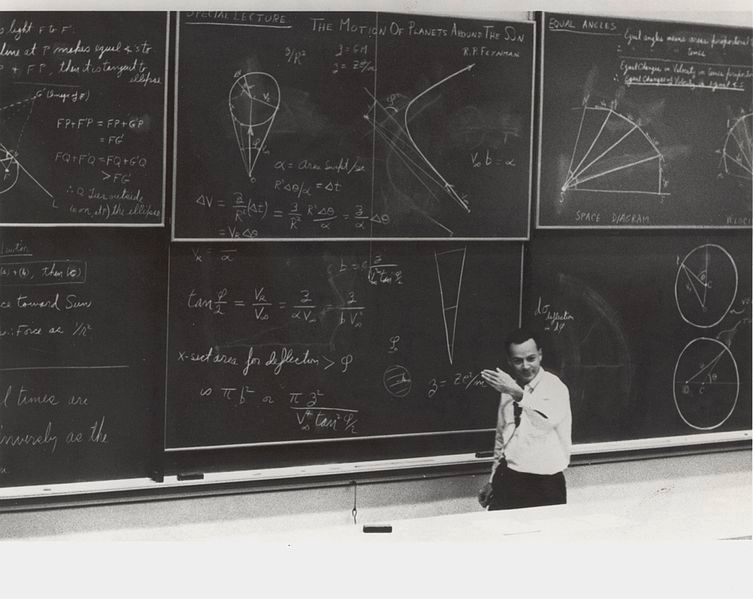

I think I was 17 or 18 when I read ‘Surely you’re joking’ for the first time. We had an amazing physics teacher at sixth form called George Andronov who introduced us to all sorts of popular books about physics including Flatland by Edwin Abbott and the Mr Tompkins books by George Gamov as well as Richard Feynman. I recognised Feynman from the Challenger disaster. I think probably not directly from when it happened (I would have been too young) but from a Horizon documentary several years later — perhaps even a repeat. I remembered the way he showed what had probably happened in a press conference in a way that anybody could understand — just one example of his skills as a communicator as well as a great physicist. When I got to university I did ok in the first year of undergraduate physics but I really started to struggle in the second year when physics became much more mathematical. It was the Feynman lectures that got me through. I couldn’t afford a copy but there were plenty in the library and I’d sit there in the gaps between our lectures trying to really understand what was going on by reading up on how Feynman explained things. But physics was just part of Feynman’s life. ‘Surely you’re joking’ is a collection of reminiscences of how the physics came to happen rather than the physics itself. There are so many amazing stories of how he didn’t take the conventional path — how he was able to choose to do things in unusual ways because of his brilliance. He was almost always in demand but would never really play up to what was expected of him. Feynman’s approach was really forged when he was sent to Los Alamos (pretty willingly given what he and all the other scientists at the time thought Hitler’s Germany might be capable of) and as a 21 year old found his mathematical approach was useful. Some of my favourite bits are about that time when everybody in the science world came together to achieve something extraordinary in just a few short years. Feynman’s boss — Robert Oppenheimer — was perhaps one of the greatest managers and technical leaders of all time. What’s most interesting of course is that they found out fairly quickly that they’d been sold a lie by the military and in turn by the politicians. Feynman found he regretted a lot later on. Oppenheimer was pilloried by the McCarthyite idiots as a communist for the fact that he went public about his regrets and his criticisms of the politicians of the time. He’s best know for his deliberate citation of the Bhagavad Gita, “I am become death, destroyer of worlds”. They were momentous times and perhaps tell us something about how science and technology should respond to the momentous times we find ourselves in politically today. What shocked me reading ‘Surely you’re joking’ for a second time was how much of a dinosaur Feynman comes across as being. His attitude to women seems pre-historic these days and some of the arrogance comes across as really old-fashioned. I have no doubt that he was an amazing person to hang out with at the time but I think these days he’d just be an inappropriate bore. It only slightly detracts from the book though — it’s still a wonderful read.
Surely you’re joking, Mr Feynman!
Life lessons from a physics great
.jpg) Anurag Singh
25 Jan
Anurag Singh
25 Jan

Anurag Singh
25 Jan
The hours, minutes and seconds stand as visible reminders that your effort put them all there.
Preserve until your next run, when the watch lets you see how Impermanent your efforts are.